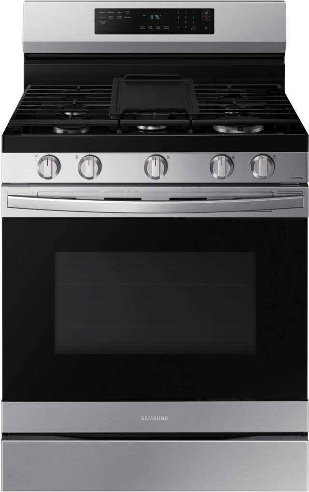

Whether your stove won’t heat, your oven is uneven, or your gas/electric appliance has electrical faults — MyFixer provides fast, reliable, and professional stove & oven repair services.
From Centurion to Pretoria, Johannesburg, Sandton, Randburg and Roodepoort, we help local homes and businesses get their kitchens working again quickly. See our Google Business profile for verified local reviews and availability.
Our certified technicians accurately diagnose problems and fix them the first time. We service all major brands including Bosch, Defy, SMEG, Samsung and more.